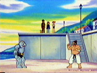

|
|
|
209. Machoke, Machoke Man

The gang is on the boat with Jenina. They get the medicine for
Sparkle. Jenina gets the medicing and brings it to Jasmine. The gang
stayes so they can get a badge. They go to look for a gym when they
see a Machoke practice fighting its trainer.
They fight well. The trainer is trying to train it. It is going
really well. Machoke uses a really good submission attack and it
"knocks him out." He is very proud of the machoke. The trainer says
that the submission attack was perfect. He wasnt hurt at all. The
trainer asks why Ash is in town, he figures hes looking for the gym.
The trainer makes Ash march to the gym. The trainer comes up all
tried. A lot of people and Pokemon come out and say "Welcome Back
Master." He is the gym leader! His name is Chuck. They eat so they
can be strong. A girl says that Ash wont have any trouble beating
her "flabby" hisband.
Team Rcoket is hungry and walking the streets. Meowth smells food so
they follow the smell. Meanwhile the gang is so full. Brock says
that is is Pokemon Power food, it strengthens the Pokemon. Chuck
challenges Ash. Its a 2 on 2 battle. Chuck is gonna use Machoke and
Poliwrath. First he sends out Politwrath. Pikachu uses Thunderbolt
but it dodges it twice and then gets hit. It isnt hurt much. Pikachu
uses quick attack. Poliwrath uses double slap and knocks out
Pikachu. Team Rocket is looking into the gyms cafeteria, they find
the food and eat it all.
Back at the match, Ash is deciding who he should use. He sends out
Bayleef. Poliwrath uses something but bayleef dodges it. Razorleef
hits Poliwrath and so does vine whip. Poliwrath looks bad. Bayleef
uses body slam. Poiwrath is knocked out! Chuck recalls it and sends
out Machoke. Chuck tells it to use Karate Chop attack, but it uses
it on Chuck. Brock says that he is just practicing up. Ash decides
to do it too. he tells Bayleef to give him a body slam and
suprisingly Ash can withstand it.
Team Rocket is now very full. They are laying on the ground when
Chuck's wife asks is she can help them. They do their motto, she
stops them mid-way and tells them they can help with the chores. She
says that it will help them work up an appetite for afternoon snakc,
so they do it.
At the battle again Machoke and Bayleef use assorted attacks.
Machoke hits batleef and it gets knocked to the ground. It uses Vine
Whip on Machoke and they both try to pull the other to them. Brock
says it should put some slack into the vine whip, but Ash doesnt
listen. Machoke uses submission on it. Bayleef uses vine whip again
and throws Machoke hard against the ground. It then uses Body Slam
followed by a razor leef. Machoke is knocked out! Ash and Bayleef
win! Chuck is still very proud of Machoke. Chuck gives him the Storm
Badge and says that Ash will do great in the Johto league. On the
phone Ash talks ot Jenina but she says that Sparkle isnt fealing
beter yet. He will have to wait a little longer. Chuck and his wife
say they they should check out the Whirl Islands. They decide to go
since he cant battle Jasmine yet.
Team Rocket is sitting on the back porch. They are happy how the day
went because they got a lot of good foods.
Ash and the gang get the boat for the Whirl Islands while Chuck and
his wife wave goodbye. Ash, Misty, and Brock are really excited
about going to the Whirl Islands. Misty wants to see some cool water
Pokemon, Brock hopes there are some pretty girls there, and Ash and
Pikachu just wanna see the mysteriou Pokemon. What will the gang
encounter in the Whirl Islands?
Whos that Pokémon? Ampharos
|
|
|
|